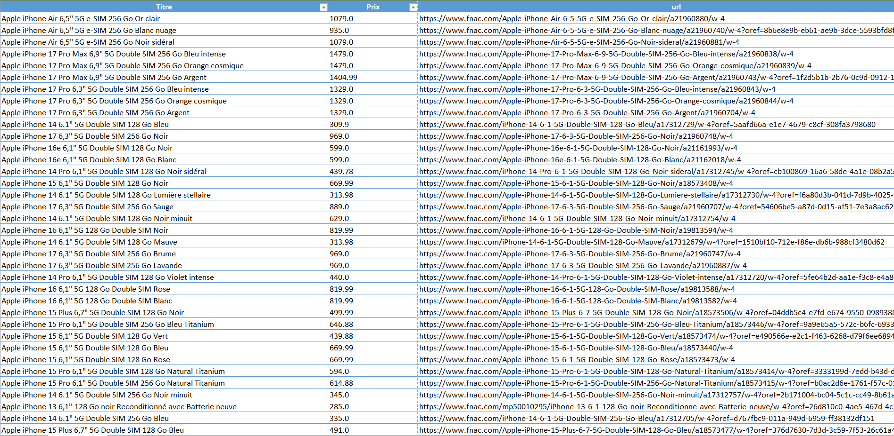

Extraction et structuration de plus de 2 000 données produits depuis Fnac et Cdiscount afin de constituer un dataset exploitable pour l’analyse et la comparaison.

Capture d'écranLe contexte
Les sites e-commerce contiennent une grande quantité de données produits, mais leur collecte automatisée peut devenir complexe lorsque les plateformes utilisent des structures différentes, du contenu dynamique et des mécanismes de protection contre les robots. Dans ce projet, l’objectif était de collecter des informations p roduits depuis Fnac et Cdiscount, tout en prenant en compte les contraintes techniques propres à chaque plateforme.
L'objectif : Automatiser la collecte et obtenir des données directement exploitables et de construire un système capable d’extraire plus de 2 000 données produits, de les nettoyer et de les structurer afin de produire un dataset unique, prêt à être analysé ou réutilisé.
L'approche
J’ai commencé par analyser la structure de chaque site : organisation des pages, navigation, éléments HTML et chargement dynamique des données.
Une stratégie d’extraction spécifique a ensuite été mise en place pour chaque plateforme.
L’automatisation repose sur Playwright, avec une gestion des contraintes liées aux mécanismes antibot, notamment l’utilisation de proxies résidentiels, la gestion du fingerprint et la simulation d’une navigation naturelle.
Une fois les données collectées, Pandas est utilisé pour nettoyer, transformer et standardiser les différents champs avant leur regroupement et leur export au format CSV.
Le résultat
Le système permet de collecter et de regrouper les données provenant des deux plateformes dans un dataset unique. Les données sont nettoyées, structurées et standardisées, puis exportées au format CSV pour être directement réutilisées dans des analyses, comparaisons ou traitements ultérieurs.
Stack technique